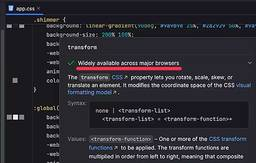

直近1週間の人気フィード
はてなブックマーク数を元に新着優先で並べ替え

Web標準の「Baseline」チェックにJetBrains IDEsが対応。Chrome DevToolsもCSSプロパティのBaseline表示に対応 10
10 Publickey
Publickey
Web標準はリビングスタンダードとしてつねにアップデートが行われており、ChromeやFirefox、Safariなどの主要なWebブラウザは、Web標準で新たに策定される機能をそれぞれ実装し、最新版に反映させています。 ただしその実装時期...
1日前

他言語経験者が知っておきたいTypeScriptのクラスの注意点 76 KAKEHASHI Tech Blog
KAKEHASHI Tech Blog
はじめに こんにちは、岩佐 幸翠(@kosui_me)です。カケハシで認証基盤・ライセンス基盤・組織階層基盤などのプラットフォームシステムを開発・運用する認証権限基盤チームのテックリードをしています。 TypeScriptのクラス構文は、一見するとJavaやC#などの言語と非常に似ていますが、その背景にあるJavaScriptの特性により、振る舞いに重要な違いが存在します。これらの違いを理解することは、これまでの経験を活かしつつ、TypeScriptで堅牢なアプリケーションを構築する上で非常に重要です。 本記事では、主にJavaやC#など、クラスベースの静的型付け言語に慣れ親しんだエンジニアの…
7日前